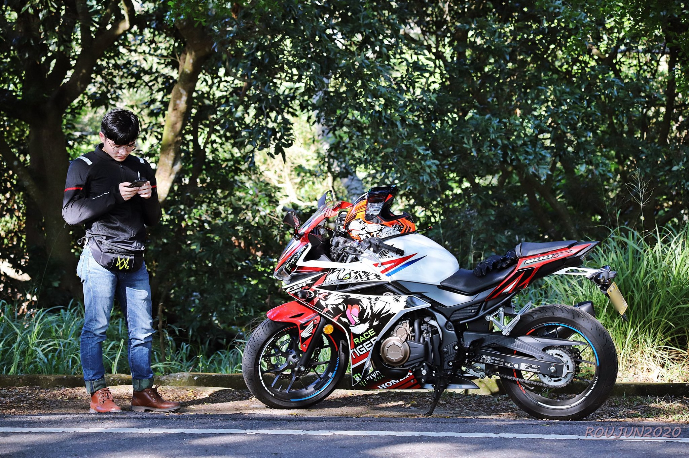

個人介紹
我畢業於台中市新民高中，目前就讀勤益科技大學資訊工程系，家裡總共有5個人，我是老么，如果我有哪裡做不好都可以說出來 ，在填取高中時，起初以為只要讀資訊相關的科系，可以每天玩電腦，後來才發現是我太天真了，不過因為老師都說讀工科，以後出來社會工作 薪水一定都很可觀，就這樣一直讀到現在了。
對於未來我希望一畢後，就找一個鐵飯碗的工作，在工作的期間都定期定額的購入股票，在40歲能夠財務自由並退休， 出國去學習其他國家的交通設計，分享我的經驗跟交通議題，讓台灣的交通事故減少一些。